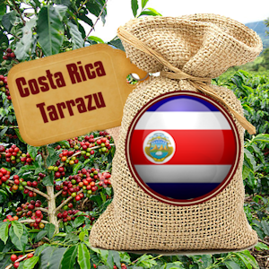

Costa Rica Tarrazu Coffee

- Costa Rican coffee beans are considered among the best in the world.
- Tarrazú is thought to produce the most desirable coffee beans in Costa Rica.
- Costa Rica is regarded as one of the world’s premiere coffee growing regions due to its volcanic soil and ideal drainage.
- As a result, this coffee is delightfully smooth with a sweet, fruity aroma.
- Its flavour profile is marked by subtle chocolate nuances paired beautifully with the delicate hint of citrus.
- The cup finishes with a dry, lemon-like citrus nuance.
- Tarrazu coffee is a full bodied bean with a mellow taste and excellent acidity.